Hoje, amanhã e os próximos dias
Clique na barra e veja o mês inteiro e todos os seus eventos. Funciona com todas as agendas do seu Mac.
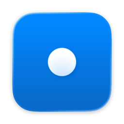
TerminPara Mac · Grátis na App Store
O Termin coloca a sua agenda na barra de menus do Mac, para você sempre saber o que vem a seguir e quanto tempo ainda tem.
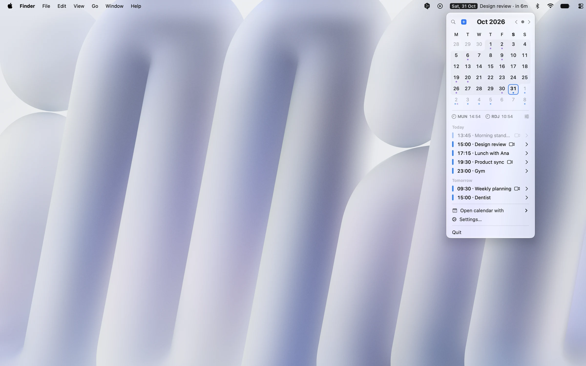
Num relance
A próxima reunião e a contagem regressiva direto na barra de menus. Um minuto antes, um aviso com o botão “Entrar”, que abre a chamada.
Clique na barra e veja o mês inteiro e todos os seus eventos. Funciona com todas as agendas do seu Mac.
Quanto tempo leva até cada evento, de carro, transporte público ou a pé, e um aviso na hora de sair.
Busque por título ou participante e responda aos convites sem abrir outro app.
Com link do Google Meet, convidados, alerta e um segundo fuso horário, direto da barra de menus.
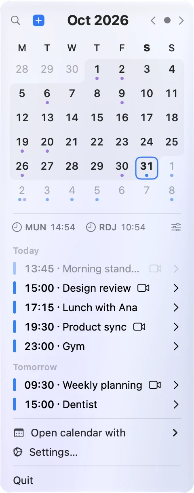
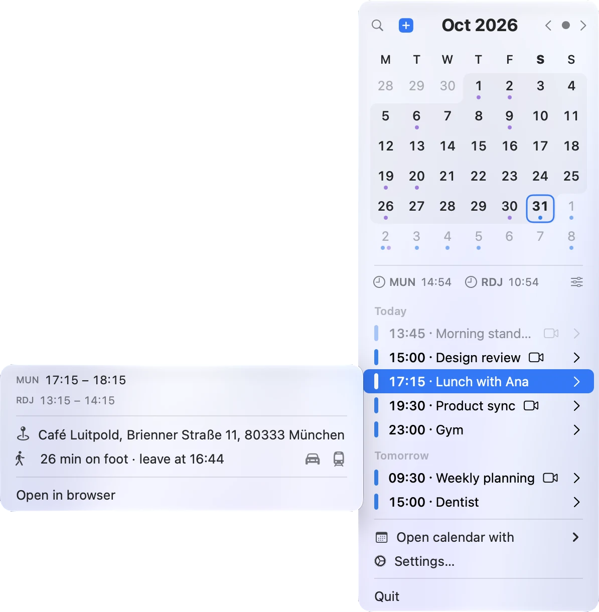
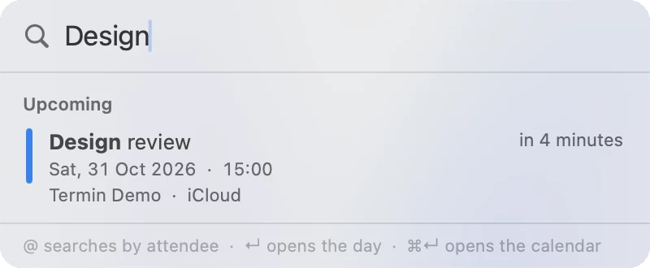
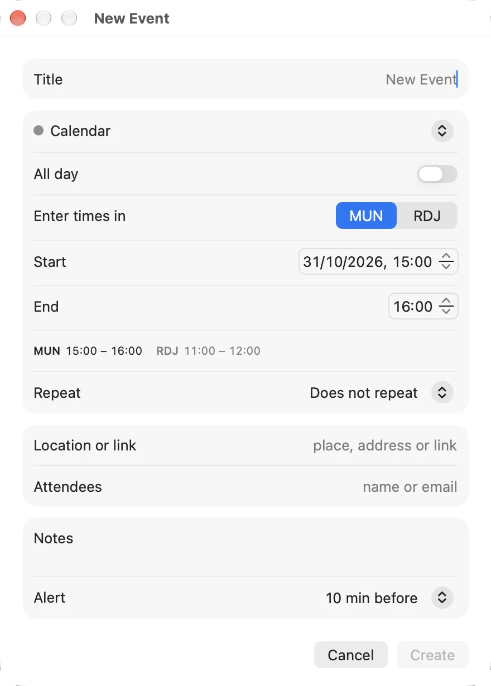
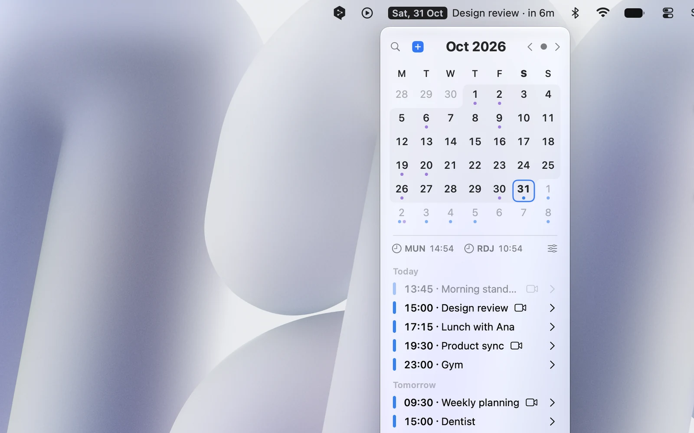
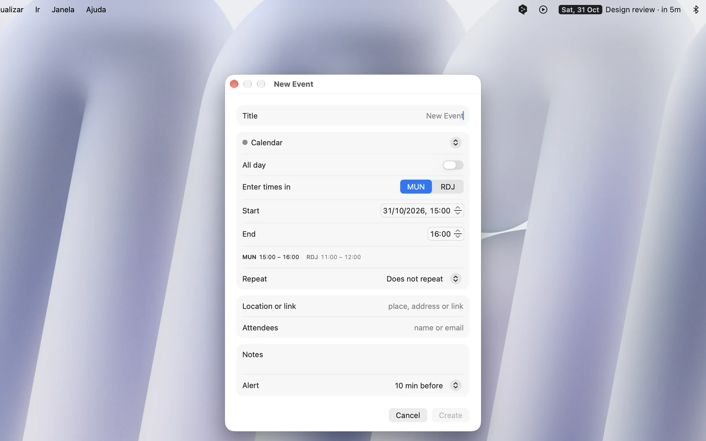
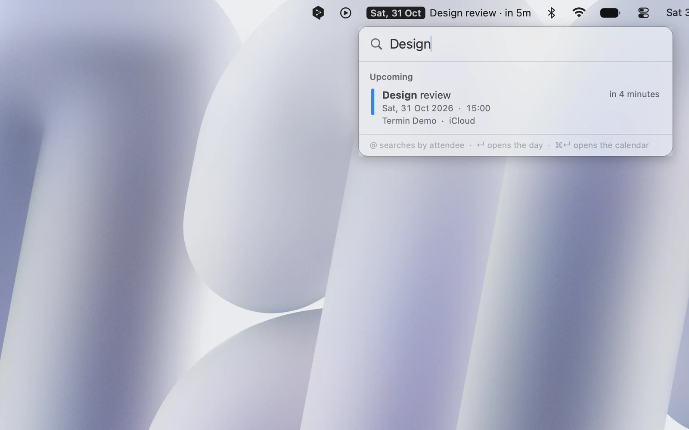
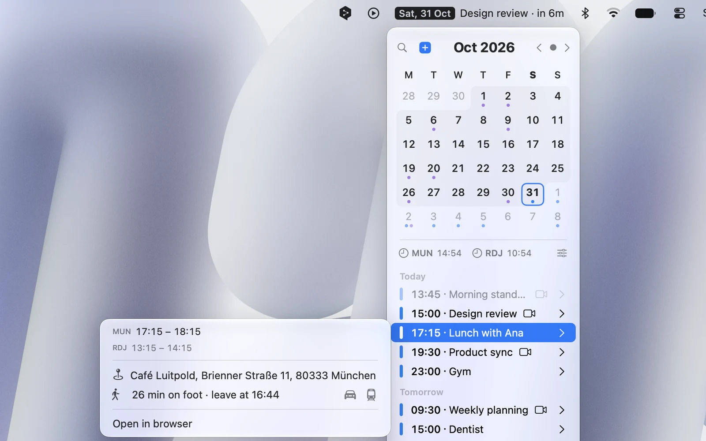
E mais um monte de detalhes
O horário de outra cidade no relógio, nos eventos e ao criar eventos.
O Termin encontra o link da chamada no evento: Zoom, Meet, Teams, Whereby e outros.
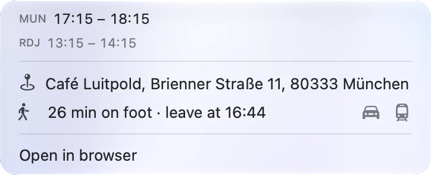
Abra o endereço no Mapas, mande e-mail para os participantes ou abra seu app de calendário preferido.
iCloud, Google, Outlook, Exchange e outras, as mesmas do app Calendário.
Segue a aparência do seu Mac e abre junto com ele, se você quiser.
Termin Pro
Experimente todas as funções Pro grátis por 14 dias. Nada é cobrado automaticamente. Depois, libere o Pro com uma compra única.
Sem conta. Sem anúncios. Sem rastreamento. O Termin não coleta nenhum dado. Sua agenda fica no seu Mac.
Grátis na Mac App Store. Termin Pro grátis por 14 dias.
Baixar na App StoreRequer macOS 14 ou posterior.